iPhone · iPad
외부 테스트App Store에서 TestFlight를 설치한 뒤 아래 링크로 참여하세요. 본인의 Apple ID를 사용합니다.
TestFlight 참여하기 ↗테스트 빌드의 유효기간·참여 가능 여부는 TestFlight에서 확인하세요.INSTALL
App Store에서 TestFlight를 설치한 뒤 아래 링크로 참여하세요. 본인의 Apple ID를 사용합니다.
TestFlight 참여하기 ↗테스트 빌드의 유효기간·참여 가능 여부는 TestFlight에서 확인하세요.Google Play 정식 출시 심사 제출을 요청했습니다. 자동 사전 검사와 심사·승인·공개가 끝난 뒤 일반 설치 링크를 추가합니다.
SCREEN BY SCREEN
캡처는 실제 iPhone 앱 화면에 가상 자료를 넣은 안내용 사본입니다. 운영 서버와 연결하지 않은 시뮬레이터 촬영이며 실제 저장·AI 분석·메일 발송 검증을 뜻하지 않습니다. 설치된 TestFlight 버전에 따라 화면 차이가 있을 수 있습니다. 이미지를 누르면 원본을 확대해서 볼 수 있습니다.
처음이라면 위 설치 안내 → 아래 계정 신청 → 개인 코드 수령 → 01 로그인 → 06 등록 → 07 저장 → 03 목록 재조회 순서로 시작하세요. 가상 자료 한 건만으로 충분합니다.
회사 이메일과 개인 앱 코드로 시작합니다.
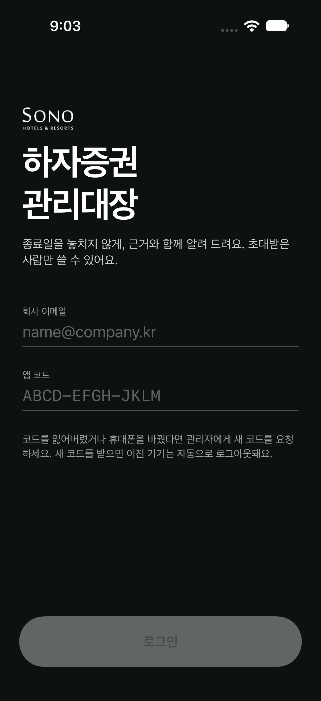
이 화면 여는 방법
앱을 처음 실행하면 표시됩니다.
관리자에게 신청한 본인 회사 이메일을 입력합니다. Apple ID가 아닙니다.
관리자가 개별 전달한 코드를 입력합니다. 다른 담당자 코드를 함께 쓰지 마세요.
두 항목을 입력한 뒤 누릅니다. 성공하면 홈으로 이동합니다.
신청 → 관리자 승인 → 개인 코드 전달 순서가 먼저 필요합니다. 코드가 없으면 아래 계정 신청을 이용하세요.
잠깐 확인해 주세요
로그인되지 않으면 이메일 오타와 코드 전달 여부를 확인하고 오류 문구만 접수해 주세요. 코드는 사진에 담지 마세요.
종료일이 가까운 자료를 먼저 살펴보는 시작 화면입니다.
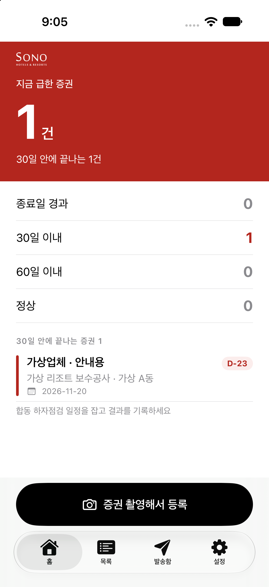
이 화면 여는 방법
로그인 후 또는 하단 홈을 누릅니다.
확인이 필요한 건수를 한눈에 봅니다. 화면의 1건은 안내용 가상 값입니다.
기간 구간별 현황을 구분해서 확인합니다. 숫자만으로 업무가 완료됐다고 판단하지 마세요.
업체 카드를 누르면 상세, 하단 검은 버튼을 누르면 등록 화면으로 이동합니다. 촬영이 바로 시작되는 것은 아닙니다.
카드에서 업체·공사·현장·종료일을 읽고 해당 건을 엽니다.
잠깐 확인해 주세요
자료가 보이지 않으면 목록의 전체 보기와 새로고침을 확인하세요.
업체별 자료를 찾고 신규 증권을 등록합니다.
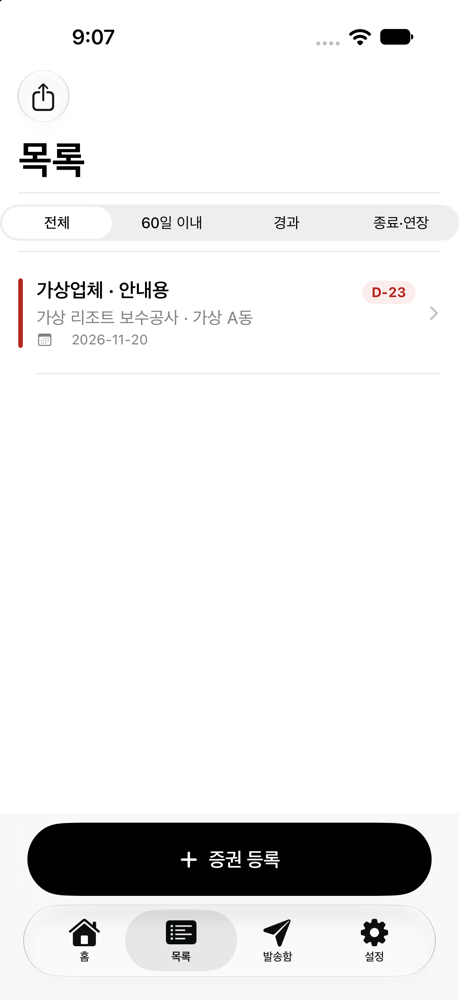
이 화면 여는 방법
하단 목록을 누릅니다.
현재 필터를 먼저 확인합니다. 원하는 자료가 없으면 전체로 돌아갑니다.
업체명·현장·남은 일수·종료일을 확인한 뒤 카드를 눌러 상세를 엽니다.
아래 + 증권 등록은 신규 입력, 왼쪽 위 공유 아이콘은 엑셀에서 열 수 있는 CSV 내보내기입니다.
검색창이 표시되면 업체·공사·현장·증권번호로 찾습니다. 목록을 아래로 당기면 최신 자료를 다시 불러옵니다.
잠깐 확인해 주세요
저장한 건이 없으면 검색어·필터를 초기화하세요. 같은 자료를 다시 등록하기 전에 확인해 주세요.
선택한 증권의 내용을 읽고 필요한 작업으로 이동합니다.
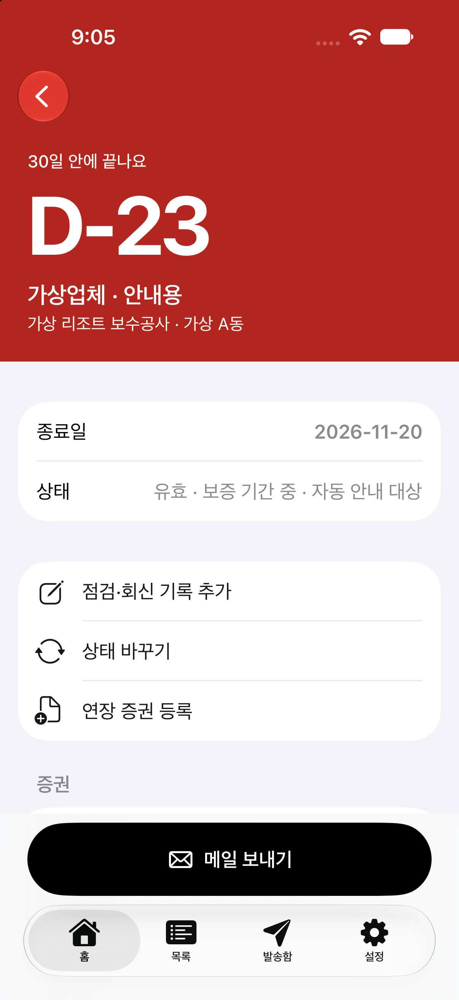
이 화면 여는 방법
홈이나 목록에서 업체 카드를 누릅니다.
남은 일수와 실제 날짜를 함께 확인합니다. 상태에 따라 자동 안내 대상 여부가 달라집니다.
점검 메모, 처리 단계 변경, 새 연장 증권 등록은 서로 다른 작업입니다. 아래 화면에서 각각 설명합니다.
받는 사람·문구를 검토하는 화면입니다. 테스트 계정의 실제 외부 발송은 차단됩니다.
아래로 내려 증권번호·보증금액·담당자·연락처·원본과 이력을 확인합니다.
잠깐 확인해 주세요
같은 업체라도 증권번호와 현장이 다를 수 있으니 수정 전에 대상이 맞는지 확인하세요.
기존 증권의 입력값을 고칠 때 사용합니다.
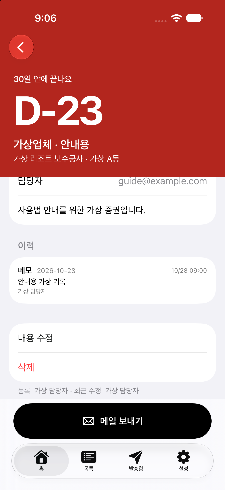
이 화면 여는 방법
상세 화면을 아래로 스크롤합니다.
누가 어떤 내용을 남겼는지 읽고 기존 작업과 중복되지 않는지 확인합니다.
비고나 연락처 등 기존 값 변경은 이 버튼으로 들어갑니다.
자료 삭제 기능입니다. 첫 테스트에서 사용하지 마세요. 일반 수정과 구분합니다.
내용 수정을 누르고 한 항목을 고친 뒤 저장합니다. 상세를 다시 열어 변경값이 유지되는지 확인하세요.
잠깐 확인해 주세요
연장 문서를 새로 받은 경우에는 내용 수정 대신 연장 증권 등록을 사용합니다.
새 증권 한 건을 입력하는 화면입니다.
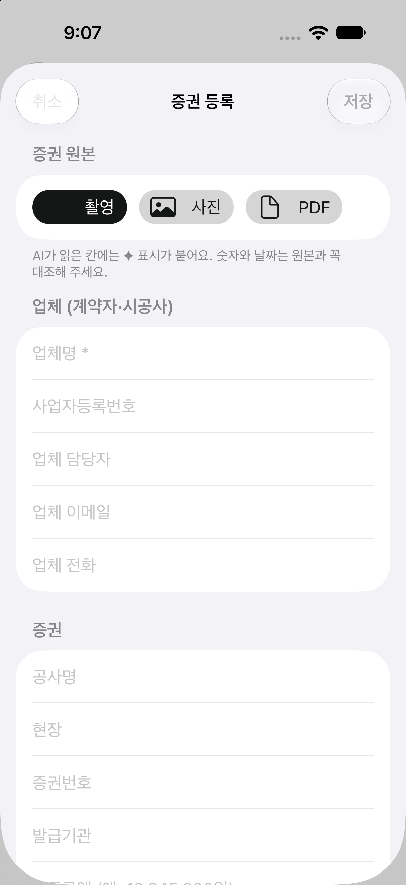
이 화면 여는 방법
목록 → + 증권 등록을 누릅니다.
가상 문서를 촬영하거나 보관된 파일을 선택합니다. 직접 입력만으로 시작해도 됩니다.
업체명은 필수입니다. 사업자번호·담당자·이메일·전화는 문서와 대조해 입력합니다.
서로 다른 증권을 구분하는 정보입니다. 시험 자료는 TEST 등 명확한 가상 표시를 넣습니다.
예: 업체명 테스트업체_본인이름, 공사명 사용법 확인용, 현장 가상현장, 증권번호 TEST-본인이름. 아래로 내려 금액·날짜를 입력하세요.
잠깐 확인해 주세요
AI 동의가 나오면 내용을 읽고 선택하세요. 원하지 않으면 AI 없이 첨부, 업로드 자체를 원하지 않으면 취소합니다. AI가 채운 번호·금액·날짜는 반드시 원본과 대조합니다.
금액·종료일·내부 담당 정보를 확인합니다.
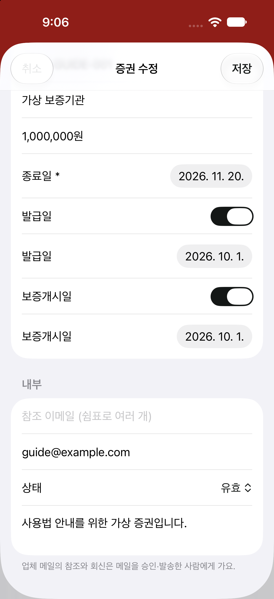
이 화면 여는 방법
등록 또는 수정 화면을 아래로 스크롤합니다. 캡처는 기존 자료 수정 화면입니다.
예시는 1,000,000원입니다. 종료일은 실제 문서 날짜와 대조하고 선택합니다.
해당 날짜를 입력하려면 스위치를 켠 뒤 날짜를 선택합니다.
참조 이메일은 쉼표로 구분합니다. 상태 항목은 수정 화면에 표시됩니다. 비고에 첫 등록 테스트처럼 목적을 적으세요.
오른쪽 위 저장을 한 번 누릅니다. 목록에서 업체명이나 증권번호로 다시 찾아 입력값을 확인하세요. 취소는 저장하지 않고 돌아갑니다.
잠깐 확인해 주세요
저장 버튼이 비활성화되면 업체명 등 필수 입력을 확인하세요. 중복 증권번호 안내가 나오면 기존 자료를 먼저 확인하고 불필요한 중복 저장을 취소합니다.
통화·회신·점검 일정처럼 후속 내용을 남깁니다.
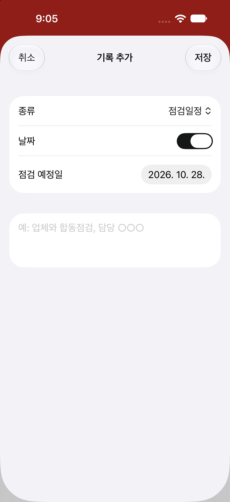
이 화면 여는 방법
상세 → 점검·회신 기록 추가를 누릅니다.
남길 기록에 맞는 종류를 선택합니다. 캡처는 점검일정 예시입니다.
일정이 있으면 스위치를 켜고 날짜를 선택합니다.
예: 가상 점검 예정, 담당자 확인 필요처럼 기록을 입력한 뒤 오른쪽 위 저장을 누릅니다.
저장 후 상세의 이력에 종류·날짜·내용이 나타나는지 확인합니다. 기록 추가만으로 증권 종료일이 바뀌지는 않습니다.
잠깐 확인해 주세요
실제 고객 연락처나 운영 문서 내용은 테스트 메모에 넣지 마세요.
업무 진행 상태를 선택하는 메뉴입니다.
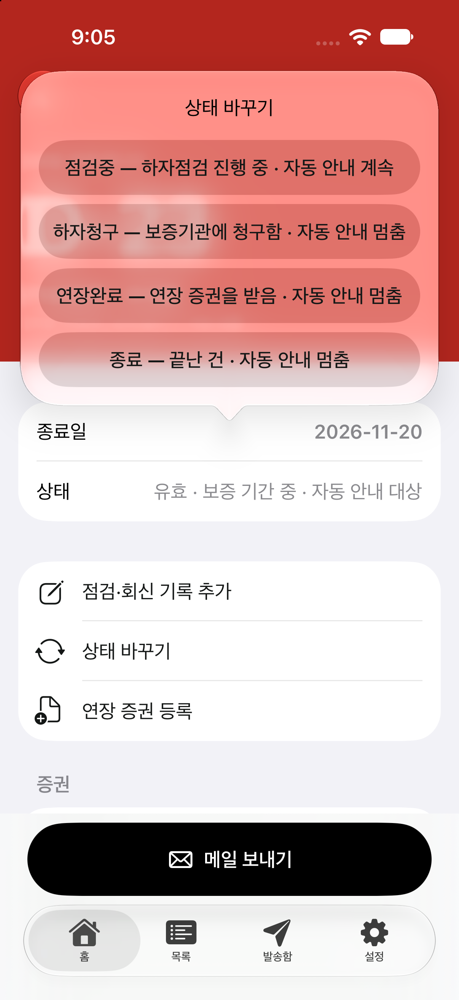
이 화면 여는 방법
상세 → 상태 바꾸기를 누릅니다.
하자점검 진행 중으로 표시되며 자동 안내 대상은 유지됩니다.
각각 보증기관 청구, 연장 수령, 업무 종료를 뜻하며 자동 안내가 멈추는 상태입니다.
연장 문서를 연결하려면 메뉴에서 상태만 바꾸지 말고 상세의 연장 증권 등록을 이용합니다.
정확한 업무 상태를 선택하고 상세의 상태 표시를 다시 확인합니다. 연장 등록은 새 증권 저장 후 이전 증권과 연결되는지 확인합니다.
잠깐 확인해 주세요
테스트의 실제 메일은 별도로 차단됩니다. 상태 변경을 메일 발송 성공으로 해석하지 마세요.
수신자와 제목·본문을 검토합니다.
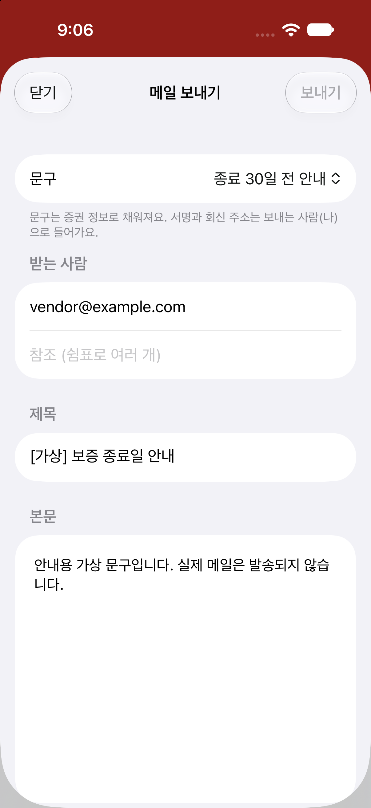
이 화면 여는 방법
상세 아래 메일 보내기를 누릅니다.
상황에 맞는 안내 문구를 선택하고 초안을 읽습니다.
업체 이메일과 참조 주소를 확인합니다. 다른 업체 주소가 섞이지 않았는지 확인하세요.
문서와 맞는 표현인지 검토합니다. 테스트·데모에서는 보내기가 비활성화되거나 실제 발송이 차단됩니다.
테스트에서는 미리보기만 확인하고 닫기로 돌아갑니다. 화면의 vendor@example.com은 가상 주소입니다.
잠깐 확인해 주세요
미리보기가 보인다는 사실은 실제 발송·수신 확인이 아닙니다. 실제 업체에 시험 메일을 보내지 마세요.
발송 대기와 최근 기록을 살펴보는 화면입니다.
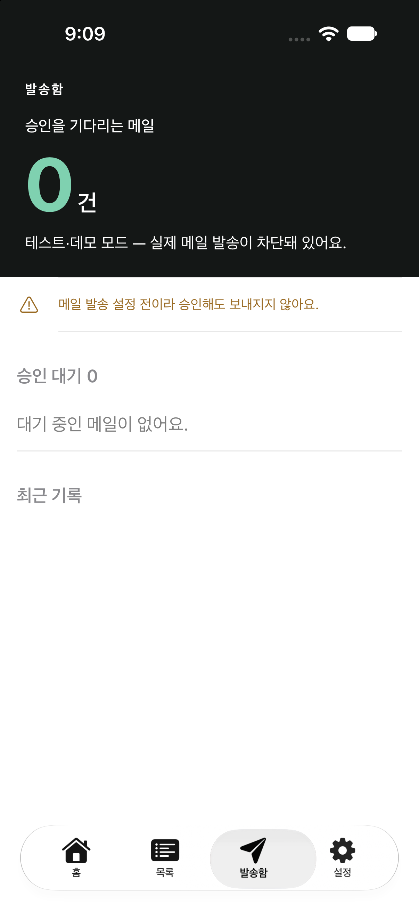
이 화면 여는 방법
하단 발송함을 누릅니다.
대기 건수입니다. 0이면 현재 표시할 대기 항목이 없습니다.
실제 발송 차단 여부를 확인합니다. 캡처에는 메일 설정 전 안내도 표시됩니다.
대기 항목과 처리 이력을 구분해서 확인합니다.
자료가 있으면 대상·수신자·내용을 확인합니다. 담당자 권한과 테스트 제한에 따라 실행 가능한 버튼이 다릅니다.
잠깐 확인해 주세요
대기 건수 0이나 화면 표시만으로 실제 메일 발송이 완료됐다고 판단하지 않습니다.
내 계정, 서명과 앱 상태를 확인합니다.
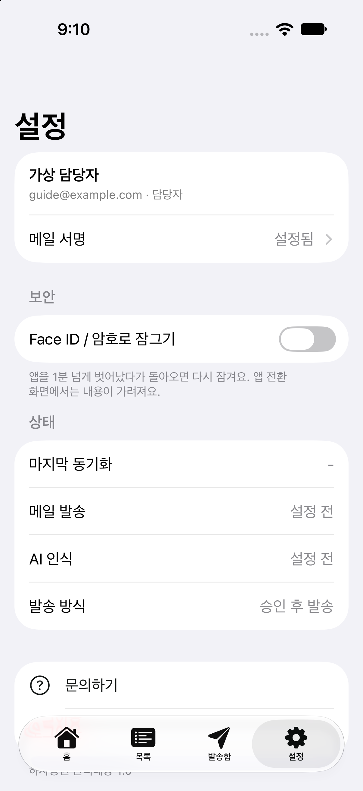
이 화면 여는 방법
하단 설정을 누릅니다.
본인 담당자 계정인지 확인합니다. 메일 서명을 누르면 서명 설정으로 이동합니다.
지원되는 iPhone 환경에서 앱 잠금 옵션을 사용합니다. 기기 조건에 따라 비활성화될 수 있습니다.
연결 상태를 구분해 읽습니다. 안내용 사본의 설정 전 표시는 운영 서비스 상태를 뜻하지 않습니다.
로그인·권한 문제를 문의할 때는 앱 버전과 상태 화면을 확인합니다. 이메일·코드 등 필요한 가림 처리 후 사진을 첨부하세요.
잠깐 확인해 주세요
로그아웃하면 앱에서 다시 로그인해야 합니다. 코드 재발급이 필요하면 관리자에게 개인 채널로 요청하세요.
HELP & ACCOUNT
아래 항목을 누르면 상세 절차가 펼쳐집니다. 요청은 작성자와 관리자만 열람하며 휴대폰 사진 한 장을 함께 접수할 수 있습니다.
초대가 가득 찼거나 빌드가 만료되면 아래 ‘수정 요청’에서 설치 문의를 남겨주세요. Android용 일반 설치 링크는 정식 공개가 확인된 뒤 추가합니다.
세 가지를 구분하세요. Apple ID는 TestFlight 설치용, 이메일 확인 링크는 이 지원 페이지 로그인용, 개인 앱 코드는 하자증권 앱 로그인용입니다. AP Holdings는 Apple ID를 발급하지 않습니다. 비밀번호·인증번호·앱 코드를 게시글이나 사진으로 보내지 마세요.
코드를 받지 못했거나 로그인에 실패하면 ‘설치·도입·이용 문의’로 접수하세요. 코드는 적지 말고 신청 이메일·실패 화면·기기·앱 버전만 알려주세요.
버전·기기·권한에 따라 버튼 위치나 표시가 다를 수 있습니다. 등록·수정 버튼이 없으면 다른 사람 계정을 빌리지 말고 권한 확인을 요청하세요. 테스트 계정은 가상 자료의 등록·수정용이며 운영 데이터 이용 권한과 구분합니다.
첫 테스트 예시: ‘테스트업체_본인이름’ 등록 → 검색 → 비고 수정 → 재조회 → 결과를 이 페이지에 접수. 실제 사업자등록번호·연락처·증권 원본 대신 가상 값을 사용하세요.
같은 증권번호가 있다는 안내가 나오나요? 기존 가상 자료가 있는지 먼저 확인하세요. 실수로 중복 등록한 것이라면 취소하고 목록에서 찾아 수정합니다. 중복 저장 확인을 무조건 누르지 않습니다.
저장 버튼을 눌러도 진행되지 않나요? 업체명이 입력됐는지, 문서 분석이나 저장이 진행 중인지, 네트워크 오류가 표시되는지 확인하세요. 같은 자료를 여러 번 만들기보다 오류 문구를 기록하고 문의해 주세요.
개인 앱 코드가 없으면 앱에 로그인할 수 없습니다. 지원 페이지의 이메일 확인 링크를 앱 코드 입력란에 붙여 넣지 마세요.
버튼이 표시되지 않으면 설치 버전·담당자 권한을 먼저 확인해 주세요. 화면을 찾기 어렵다면 현재 화면을 사진으로 남겨주셔도 됩니다.
설치된 빌드에 해당 메뉴가 있을 때 이용하세요. 모든 기기의 촬영·PDF·AI 동작 검증이 끝났다는 의미는 아닙니다. 앱 문서 첨부와 아래 지원 게시판의 사진 첨부는 서로 별개입니다.
요청 내용·사진·답변은 작성자와 관리자만 볼 수 있습니다. ‘완료’는 해당 요청의 처리 상태이며 앱 정식 출시나 모든 오류 해결을 뜻하지 않습니다. 답변은 이 페이지에서 확인하며 자동 답변 메일을 약속하지 않습니다.
작성 예시
제목: 증권 수정 후 비고가 바뀌지 않아요
순서: 목록 → 테스트 증권 선택 → 수정 → 비고 변경 → 저장
기대: 다시 열었을 때 변경한 비고 표시
실제: 이전 비고 표시 / iPhone 기종·iOS·TestFlight 버전 함께 기재
급한 설치·접속 문의는 alfred.park@apholdings.kr로도 알려주실 수 있습니다. 확인되지 않은 처리 완료 시각을 약속하지 않으며, 확인 결과와 필요한 다음 조치를 안내드리겠습니다.
하자증권 앱은 iPhone·Android 모두 무료 다운로드 기준입니다. 스토어에서 앱을 내려받는 것과 업무 자료에 접근하는 권한은 다릅니다. 관리자가 승인한 회사 이메일과 개인 앱 코드로 로그인해야 이용할 수 있으며, 공개 회원가입은 제공하지 않습니다. 현재 iPhone은 TestFlight, Android는 정식 출시 심사 제출 요청 단계이므로 실제 설치 가능 여부는 위 안내를 확인해 주세요.
테스트 메일 미리보기와 실제 외부 발송을 구분하세요. 실제 업체에 메일을 보내거나 운영 설정을 바꾸는 방식으로 테스트하지 않습니다. 삭제·사용자 관리·코드 발급 등 관리자 기능은 일반 담당자 테스트 항목에 포함하지 않습니다.
화면이 멈추거나 저장 결과가 불분명하면 중복 등록을 피하고 오류 화면을 기록하세요. 앱 코드가 노출됐다고 의심되면 코드를 게시하지 말고 관리자에게 재발급을 요청하세요.
YOUR WORKSPACE
접수 기능을 준비하고 있습니다. 회사 이메일 확인과 비공개 접수 검증을 마친 뒤 신청을 받을 예정입니다.
이메일로 받은 확인 링크를 누르면 신청과 내 요청을 이용할 수 있습니다. 비밀번호를 새로 만들지 않습니다.
신청 상태를 불러오는 중입니다.
실제 증권·고객 정보 대신 가상 자료로 설명해 주세요.
PRIVACY
에이피홀딩스는 이메일 소유 확인, 테스트 계정 신청 심사와 수정 요청 처리를 위해 회사 이메일·이름·소속·이용 기기, 요청 내용·선택 사진·답변·처리 이력을 수집합니다. 사진과 요청 내용은 작성자와 관리자만 열람하며 공개 게시하지 않습니다.
접수 정보는 지원 목적에 필요한 동안 보관하며 삭제 요청 시 관리자가 관련 보관 의무와 처리 이력을 확인해 안내합니다. 자동 삭제가 완료되었다고 표시하지 않습니다. Supabase 서울 리전의 인증·데이터·비공개 저장소와 Resend 이메일 발송 서비스를 사용합니다. 인증 링크 발송을 위해 회사 이메일을 Resend에 전달하며, 요청할 때만 로그인 메일을 보냅니다. 인증 요청 남용 방지를 위해 이메일·접속 주소의 해시와 시간대별 요청 횟수를 최대 7일간 보관하고 다음 인증 요청 시 지난 기록을 정리합니다. 홍보 메일 수신 동의로 사용하지 않습니다.
앱의 데이터 처리 안내는 하자증권 앱 개인정보 처리방침에서 확인하세요. 접수 정보 열람·삭제 문의: alfred.park@apholdings.kr